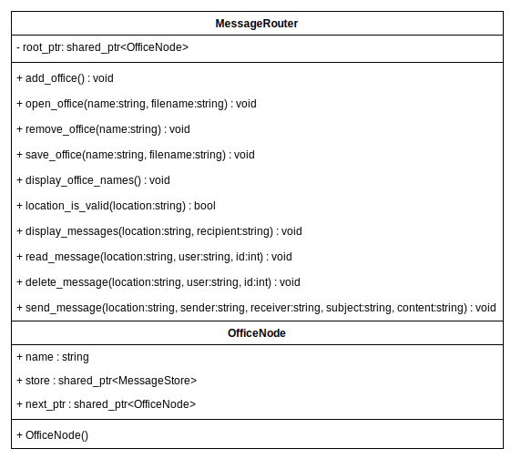
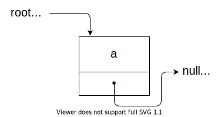
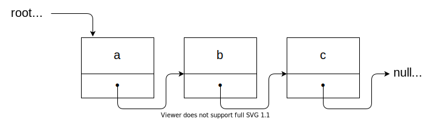

Week 5 Ponder and Prove: Nodes
Overview
Task: Upgrade the messaging system with office locations
Purpose: Explore the concept of a Node
Instructions
Scenario: Your company's CEO is getting more nervous about the possibility of company secrets leaking to unauthorized third parties. The messaging system you created for the company is working, but the boss wants it to be even more secure. You have been tasked with adding new functionality to the application so that messages are sent based on the destination company office. Instead of sending a message to a user, now all messages must be sent to a user at a specific location. Users must login to a specific location in order to read the messages stored for them there. Users can only see the messages for the location at which they are logged in.
In order to implement this new functionality, your team lead has given you the following guidance, in addition to the MessageRouter class (message_router.h) declaration, the modified driver program (week05.cpp) for the application using the MessageRouter class, and message files containing sample messages for three offices: a, b, and c.
Guidance
Use the existing Message and MessageStore classes from last week without making modifications. (You may use your code from last week, or use last week's sample solution as a starting point)
Create a new class called MessageRouter based on the following diagram. The MessageRouter class includes a private class called OfficeNode, which is a simplified version of the Node class you saw in the reading material. The OfficeNode class is used to represent an office location and includes an office name and a MessageStore unique to that office location.
 Methods: add_office():void open_office(name:string,filename:string):void remove_office(name:string):void save_office(name:string, filename:string):void display_office_names():void location_is_valid(location:string) display_messages(location:string,recipient:string):void read_message(location:string,user:string,id:int):void delete_message(location:string,user:string,id:int):void send_message(location:string,sender:string, reciever:string, subject:string, content:string):void OfficeNode - Properties: name:string store:shared_ptrThe MessageRouter class is analogous to the List class you saw from the reading. It provides a way to keep track of all the company offices (represented as OfficeNodes) and facilities for sending and reading messages at a given office location.
You will need to implement the MessageRouter based on the diagram and the MessageRouter.h file provided.
Using the concept of a simplified Node as the OfficeNode, we can keep track of an unlimited number of OfficeNodes by chaining them together like this, where the "•" represents a pointer to the next node, which we will call next_ptr:

Adding a new node is similar to the "push_back" function of a list. If the root_ptr is null, that means there are not currently any nodes:
nullptr" class="border">In this case, we can add a node a by first creating a new OfficeNode, then telling the root_ptr to point to the new node a. The new node's next_ptr will point to nullptr:
 a bullet -> nullptr" class="border">If root_ptr is not null, then there is at least one node in existence. To add a new node d, we would need to "walk" through each node in the list until we find the one that points to nullptr, which would mean we have found the last node in the list:
 a bullet -> b bullet -> c bullet -> nullptr" class="border">We would then change the last node's next_ptr to point to the newly created node that we want to add, which effectively inserts the new node at the end of the list.
In a similar manner, if we want to send a message or read a message, we can "walk" through the list of OfficeNodes looking for the node with the matching office name. Once we find the appropriate node, we can use its MessageStore to send, read, or delete a message.
Here is an example of adding a new OfficeNode to our list.
// create a new OfficeNode which we can access using the pointer node_to_add_ptr
shared_ptr<OfficeNode> node_to_add_ptr = make_shared<OfficeNode>(office_name);
// Check if the list is currently empty
if (root_ptr == nullptr) {
root_ptr = node_to_add_ptr;
return;
}
// If the list already has nodes, "walk" through the existing nodes to find
// the last one
shared_ptr<OfficeNode> curr_ptr = root_ptr;
while (curr_ptr->next_ptr != nullptr) {
curr_ptr = curr_ptr->next_ptr;
}
// Point the last node's next_ptr to the new node
curr_ptr->next_ptr = node_to_add_ptr;
Example run of the messaging application with office locations
User input is underlined
Enter user name ('quit' to exit): alice
Enter location: a
Welcome, alice
Choose an option:
d - Display all messages
r - Read a message
x - Delete a message
s - Send a message
q - Exit user
alice (a)> d
[1] Message from bob at 11/2/2020 - Subject: Hi
[2] Message from carol at 11/3/2020 - Subject: Latest security updates
Choose an option:
d - Display all messages
r - Read a message
x - Delete a message
s - Send a message
q - Exit user
alice (a)> s
Who are you sending to? bob
What is their location? b
What is the subject? test message
What is the message? Bob, This message is a test to see if you receive it.
sent message from alice to bob at b
Choose an option:
d - Display all messages
r - Read a message
x - Delete a message
s - Send a message
q - Exit user
alice (a)> q
Goodbye alice.
Enter user name ('quit' to exit): bob
Enter location: b
Welcome, bob
Choose an option:
d - Display all messages
r - Read a message
x - Delete a message
s - Send a message
q - Exit user
bob (b)> d
[3] Message from alice at 11/5/2020 - Subject: Hello
[4] Message from carol at 11/6/2020 - Subject: Secret Project
[5] Message from carol at 11/13/2020 - Subject: Secret Project
[8] Message from alice at 11/13/2020 - Subject: test message
Choose an option:
d - Display all messages
r - Read a message
x - Delete a message
s - Send a message
q - Exit user
bob (b)> x
Enter message id: 8
Choose an option:
d - Display all messages
r - Read a message
x - Delete a message
s - Send a message
q - Exit user
bob (b)> d
[3] Message from alice at 11/5/2020 - Subject: Hello
[4] Message from carol at 11/6/2020 - Subject: Secret Project
[5] Message from carol at 11/13/2020 - Subject: Secret Project
Choose an option:
d - Display all messages
r - Read a message
x - Delete a message
s - Send a message
q - Exit user
bob (b)> q
Goodbye bob.
Enter user name ('quit' to exit): carol
Enter location: c
Welcome, carol
Choose an option:
d - Display all messages
r - Read a message
x - Delete a message
s - Send a message
q - Exit user
carol (c)> d
[6] Message from alice at 11/4/2020 - Subject: Security pdates
[7] Message from bob at 11/13/2020 - Subject: Secret Project
Choose an option:
d - Display all messages
r - Read a message
x - Delete a message
s - Send a message
q - Exit user
carol (c)> q
Goodbye carol.
Enter user name ('quit' to exit): quit
Goodbye.
Saved office a to file
Saved office b to file
Saved office c to file
Saved office d to file
Class Diagrams

MessageRouter class declaration
// message_router.h
//
// Stores a collection of office nodes and provides facilities
// to send, read, delete messages between office locations
//
#ifndef message_router_h
#define message_router_h
#include <string>
#include "message_store.h"
using namespace std;
class MessageRouter
{
public:
// Adds a new office node to the collection of offices
void add_office(const string& office_name);
// Adds an office node by importing a file of stored messages
void open_office(const string& office_name, const string& filename);
// Removes an office node from the collection
void remove_office(const string& office_name);
// Show all office name in the collection
void display_office_names() const;
// Save the message store of an office to filename
void save_office(const string& office, const string& filename) const;
// Returns true if the given location exists in the collection
bool location_is_valid(const string& location) const;
// Display all messages for recipient at the location
void display_messages(const string& location, const string& recipient);
// Read the message identified by msg_id at office for recipient
void read_message(const string& location, const string& recipient, int msg_id);
// Send a message to reciever at location
void send_message(const string& location, const string& author,
const string& receiver, const string& subject, const string& content);
// Delete a message to recipient at location
void delete_message(const string& location, const string& recipient, int msg_id);
private:
// Stores an instance of an office
class OfficeNode {
public:
shared_ptr<MessageStore> store; // the messages for this office
string name; // the office name
shared_ptr<OfficeNode> next_ptr; // points to the next node
OfficeNode(const string& a_name); // constructor for a new office node
};
shared_ptr<OfficeNode> root_ptr; // points to the first node
};
# endif // message_router_h
week05.cpp - main driver for the application
// week05.cpp
// The main driver for the messaging application using
// the MessageRouter class
//
#include "message_router.h"
#include <iostream> // cout, endl
#include <string>
void display_menu();
void user_loop(const string& username, const string& location, MessageRouter& r);
void user_login(MessageRouter& r);
int prompt_for_id();
// file used for persistent storage of messages
const string FILENAME = "sample_messages.txt";
int main()
{
// Create a new message router
MessageRouter r;
// Open three offices
r.open_office("a", "a_messages.txt");
r.open_office("b", "b_messages.txt");
r.open_office("c", "c_messages.txt");
// Add a new office that doesn't have previously stored messages
r.add_office("d");
// Display all offices
cout << "Welcome. You may login to one of the following offices: " << endl;
r.display_office_names();
// Main loop
user_login(r);
// Save the messages from each office before exiting
r.save_office("a", "a_messages.txt");
r.save_office("b", "b_messages.txt");
r.save_office("c", "c_messages.txt");
r.save_office("d", "d_messages.txt");
}
void display_menu()
{
cout << "Choose an option: " << endl;
cout << "\td - Display all messages" << endl;
cout << "\tr - Read a message" << endl;
cout << "\tx - Delete a message" << endl;
cout << "\ts - Send a message" << endl;
cout << "\tq - Exit user" << endl;
}
// Interaction with a given user
void user_loop(const string& username, const string& location, MessageRouter& r)
{
char response; // collect user reponse to menu
int id; // store a message id
string receiver; // message recipient
string subject; // message subject
string message_content; // message contents
string destination; // location of recipient
cout << "\nWelcome, " << username << endl;
while (true) {
display_menu();
cout << "\n" << username << " (" << location << ")> ";
cin >> response; // get a single character from the input stream
cin.ignore(); // ignore the next character in the input stream, '\n'
cout << endl;
switch (response) {
case 'd': // display all messages for the user
r.display_messages(location, username);
break;
case 'r': // read a single message
id = prompt_for_id();
if (id < 0) { break; } // id was not valid
cout << endl;
r.read_message(location, username, id);
break;
case 'x': // delete a single message
id = prompt_for_id();
if (id < 0) { break; } // id was not valid
r.delete_message(location, username, id);
break;
case 's': // send a message
cout << "Who are you sending to? ";
getline(cin, receiver);
cout << "What is their location? ";
getline(cin, destination);
cout << "What is the subject? ";
getline(cin, subject);
cout << "What is the message? ";
getline(cin, message_content);
r.send_message(destination, username, receiver, subject, message_content);
break;
case 'q': // exit menu for user
cout << "Goodbye " << username << "." << endl;
return;
default:
cout << "Invalid option: " << response << endl;
break;
}
cout << endl;
}
}
// Allows user to login to system
void user_login(MessageRouter& r)
{
while (true) {
string username;
string location; // office name
cout << "\nEnter user name ('quit' to exit): ";
getline(cin, username);
if (username == "quit") {
cout << "Goodbye." << endl << endl;
return;
}
cout << "\nEnter location: ";
getline(cin, location);
if (!r.location_is_valid(location)) {
cout << "That location does not exist" << endl;
}
else {
user_loop(username, location, r);
}
}
}
// Helper function to get a message id
int prompt_for_id()
{
int id;
cout << "Enter message id: ";
cin >> id;
if (!cin) {
cout << "Invalid ID" << endl;
cin.clear(); // unset fail bit
// skip any bad characters until the end of the line
cin.ignore(numeric_limits<streamsize>::max(), '\n');
return -1; // signals error
}
return id;
}
Sample message files
Use these sample files of stored messages to test your code. These files must be located in the same folder as the week05.cpp file:
Thinking about Security
Instead of calling the offices "a", "b", "c" and so on, what if we think about each "office" as a security classification level? For example, we could create four offices called "public", "confidential", "secret", and "top secret". Messages sent to each "office" can then be considered as "protected" at that level of classificatino. This prevents the accidental mingling of messages at different security classifications. A user must login to the specified classification level before reading any messages sent to them. Users can only read the messages at the level they are logged into, preventing the accidental mixing of information classified at different levels.
What would happen if a user was logged into the "top secret" level and tried to send a message to someone at the "public" level? Should a user be allowed to send messages from a higher classification level to a lower level? Think about how this could result in an accidental disclosure of information classified at a higher level to users who are only authorized to read messages at a lower level.
What about sending messages to a higher classification level than the current "logged in" level? Should that be allowed? Would any harm be done if information from a lower classification level was sent to a higher classification level?
Under a security model known as Bell-Lapadula, a user is allowed to send messages at the same or higher classification level they are currently at, but never to send messages to a lower classification level. Conversely, users can read any messages at the same or lower classification level than that which they are currently "logged in" to, but a user can never read messages at a higher classification than their current authorization level--the level they are currently logged in to.
Stretch challenge
Add functionality to the application that prevents a user from sending messages to a security level lower than the level at which they are currently logged in, but still allows them to send messages to a higher security level.
Final Thoughts
This exercise was designed to help you think about and understand the concept of a "node" and how a node can be used to implement a collection or container of items. In fact, you have just implemented a data structure known as a "linked list". While this exercise was useful academically, in a real world production application you should use the built-in Standard Template Library (STL) containers, such as std::vector, std::list, std::map, and others rather than create your own container from scratch. Much care and effort has been put into making the STL containers as efficient as possible, making it unlikely that anyone could do a better job by writing their own container.
Review
After completing the instructions:
- Review one of the many possible solutions for this task,
- Compare and contrast your code with the possible solution's code, and
- Make note of any improvements you could make for future tasks.